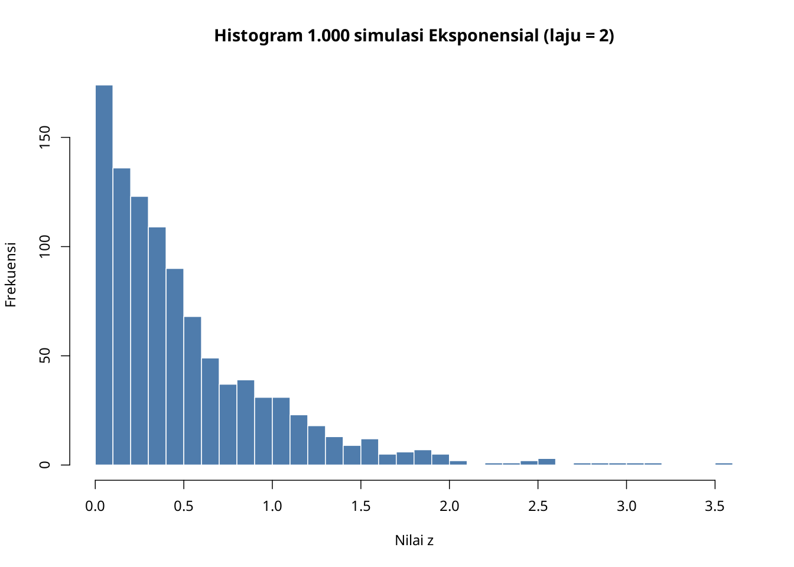
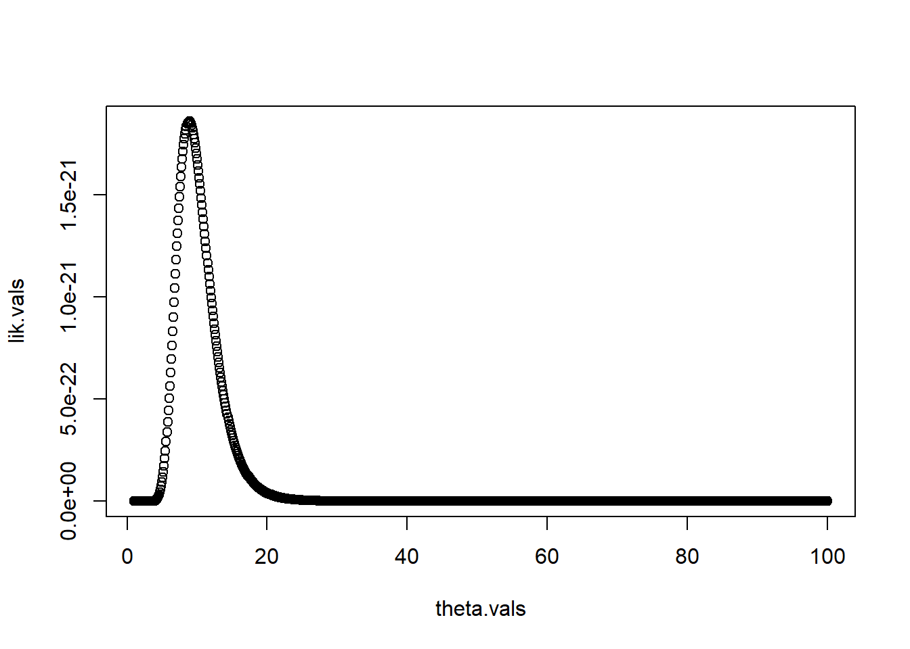
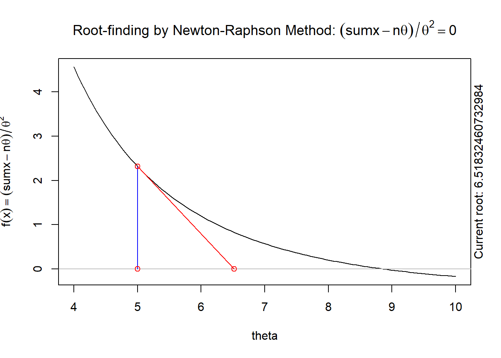
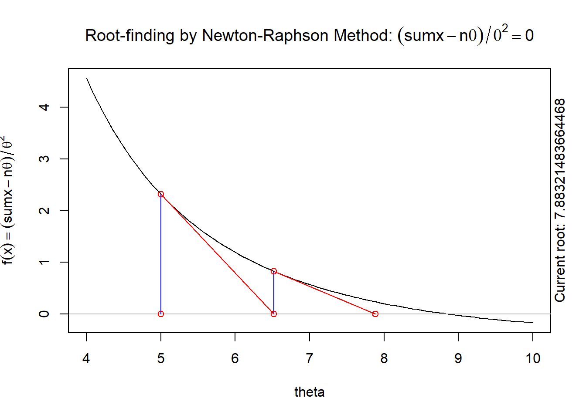
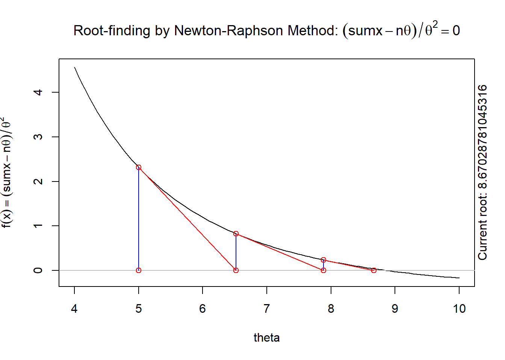
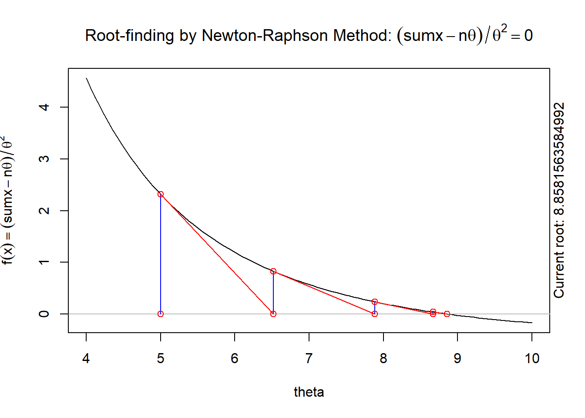
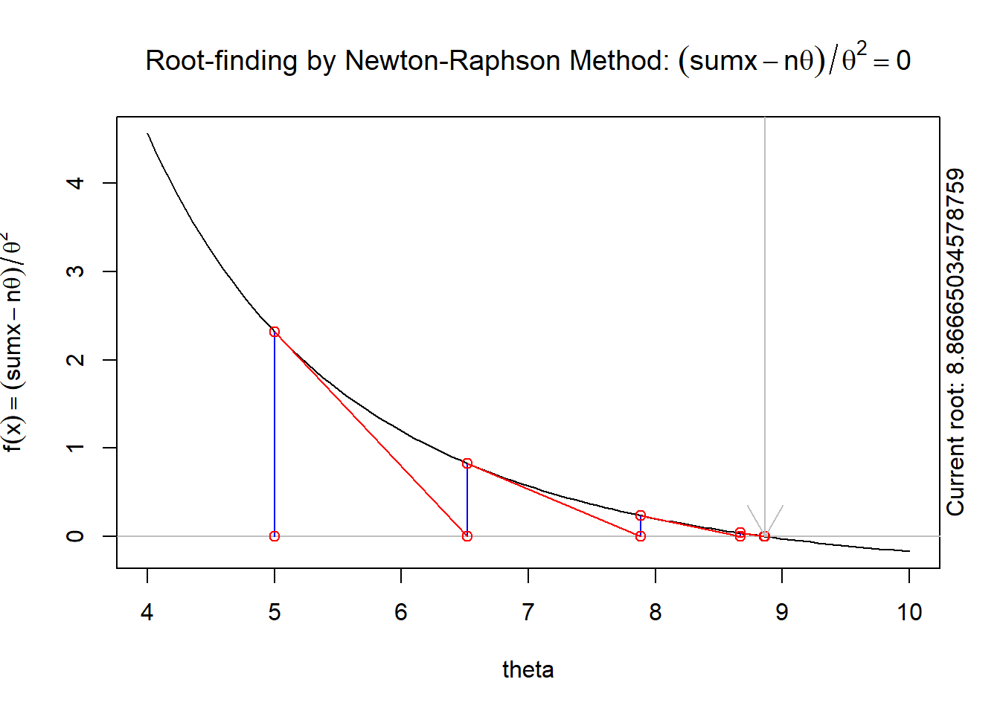
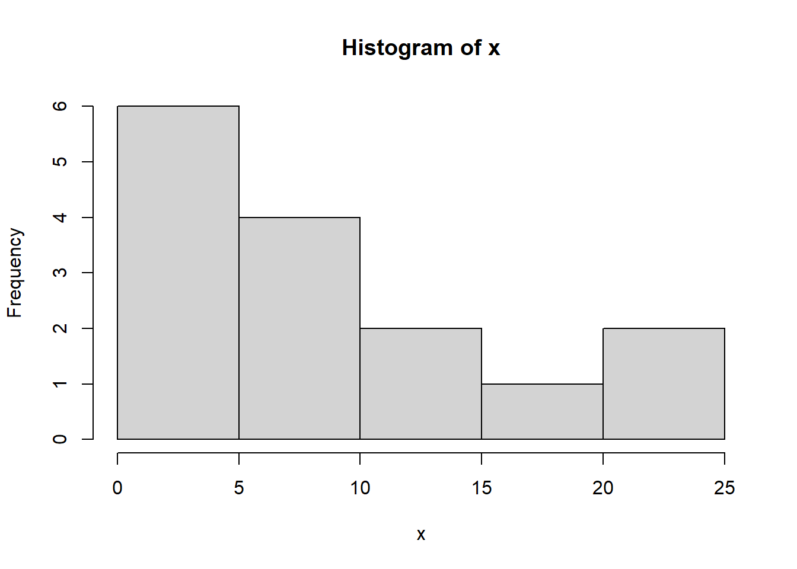
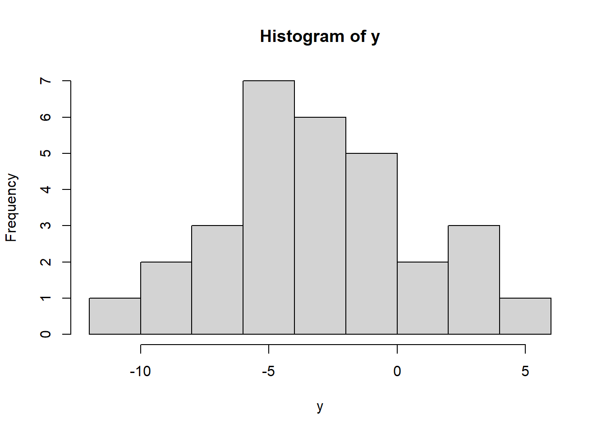

{kind=link}
{kind=link}
{kind=link}
[1] 1.0 1.1 1.2 1.3 1.4 1.5 1.6 1.7 1.8 1.9 2.0 2.1 2.2 2.3 2.4 2.5 2.6 2.7 2.8
[20] 2.9 3.0 3.1 3.2 3.3 3.4
...
[1] 97.6 97.7 97.8 97.9 98.0 98.1 98.2 98.3 98.4 98.5 98.6 98.7
[13] 98.8 98.9 99.0 99.1 99.2 99.3 99.4 99.5 99.6 99.7 99.8 99.9
[25] 100.05 Pendugaan Kemungkinan Maksimum (MLE) (Bagian II)
Dasar-dasar R
Vektor dan Kerangka Data (Data Frame)
Statistik Ringkasan dan Grafik
Distribusi Statistik dalam R
Pencarian Grid
Metode Newton–Raphson
Optimisasi Numerik
Ikhtisar
Pelajaran ini memperdalam pemahaman Anda tentang pendugaan kemungkinan maksimum (MLE) dengan berfokus pada penerapan praktisnya, khususnya melalui metode numerik dalam R. Anda akan mempelajari cara menghitung MLE untuk model berparameter tunggal dan model multiparameter menggunakan teknik seperti pencarian grid dan algoritma Newton–Raphson, dengan penekanan pada fungsi optim dalam R. Selain itu, pelajaran ini memperkenalkan keterampilan pemrograman R yang penting, termasuk operasi dasar, manipulasi vektor dan kerangka data (data frame), statistik ringkasan, pembuatan grafik, serta penggunaan distribusi statistik seperti distribusi Normal dan Eksponensial. Melalui berbagai contoh, Anda akan mempelajari cara mengevaluasi fungsi kemungkinan dan fungsi log-kemungkinan, menyimulasikan peubah acak, serta menduga parameter secara numerik. Setelah menyelesaikan pelajaran ini, Anda akan mampu menerapkan MLE dalam situasi dunia nyata dan memanfaatkan R untuk analisis statistik sebagai landasan bagi teknik inferensi yang lebih lanjut.
Tujuan
Setelah menyelesaikan pelajaran ini, Anda diharapkan mampu:
- Melakukan pendugaan kemungkinan maksimum (MLE) secara numerik untuk berbagai model berparameter tunggal dan model multiparameter menggunakan optim dalam R ketika nilai data tersedia, dan
- Menggunakan R untuk menyimulasikan peubah acak secara numerik dari distribusi baku, serta menentukan PDF, CDF, dan kuantil distribusi baku, termasuk distribusi Normal, Eksponensial, Poisson, Geometrik, dan Binomial.
5.1 Pengantar R
5.1.1 Operasi Dasar dalam R
R dapat digunakan sebagai kalkulator ilmiah. Berikut ini ditunjukkan sebagian kecil operasi serupa kalkulator yang dapat dilakukan dalam R.
3+2
3-2
3*2
3/2
3^2
exp(3)
sqrt(3)
log(3)Perhatikan bahwa dalam R, dan dalam statistika serta peluang secara umum, fungsi “log” secara bawaan adalah logaritma natural (berbasis \(e\)). Dalam matematika, fungsi ini biasanya dinotasikan sebagai \(\ln(x)\), tetapi dalam statistika, fungsi ini hampir selalu dinotasikan hanya sebagai \(\log(x)\).
Hal ini dapat dilihat dari kode berikut:
e=exp(1)
e[1] 2.718282## log basis e dari e = 1
log(e)[1] 1## log basis e dari 10 TIDAK = 1
log(10)[1] 2.3025855.1.2 Mendefinisikan dan menyimpan skalar serta vektor
Secara umum, sebaiknya Anda mengetik kode R dalam berkas teks berekstensi “.r” atau “.R”, lalu mengirim baris atau blok kode tersebut ke konsol R. Dengan cara ini, Anda dapat mengubah kode dengan mudah, menyimpan pekerjaan, serta menyalin dan menempelkannya untuk digunakan dalam situasi lain.
Anda akan sering perlu menyimpan bilangan sebagai variabel. Variabel tersebut kemudian dapat digunakan dalam perhitungan. Berikut contoh yang sangat sederhana untuk mengalikan dua bilangan:
a=4
b=3
a*b[1] 12Kita sering perlu bekerja dengan beberapa bilangan yang disimpan dalam sebuah “vektor” bilangan. R menangani vektor (dan matriks!) secara alami. Kita dapat membuat vektor menggunakan perintah c dalam R (singkatan dari “concatenate” atau menggabungkan)
## Vektor
v=c(1,4,3,2)
v[1] 1 4 3 2u=1:4
u[1] 1 2 3 4Kode tersebut telah membuat dua vektor, u dan v, yang masing-masing memiliki empat elemen. Jika kita menerapkan operasi matematika baku pada vektor, perilaku bawaan R adalah menerapkan operasi tersebut pada setiap elemen. Kode berikut mengilustrasikan hal ini.
## operasi per elemen
v+2[1] 3 6 5 4v*2[1] 2 8 6 4u^2[1] 1 4 9 16u+v[1] 2 6 6 6u*v[1] 1 8 9 85.1.3 Membuat subset vektor
Data atau parameter sering disimpan dalam sebuah vektor, tetapi kita mungkin hanya ingin mengakses satu atau beberapa elemen vektor tersebut. Pengindeksan dalam R dilakukan menggunakan tanda kurung siku: [ ]
## Membuat subset vektor
v[1] 1 4 3 2v[1][1] 1v[2][1] 4v[3][1] 3v[4][1] 2v[1:3][1] 1 4 3v[c(1,4)][1] 1 2v[c(3,4)][1] 3 25.1.4 Pernyataan logis dan perintah which dalam R
Salah satu cara penting untuk membuat subset vektor adalah melalui argumen logis. R memungkinkan kita memeriksa apakah suatu pernyataan logis bernilai TRUE atau FALSE. Pemeriksaan ini paling sering dilakukan menggunakan operator <, >, atau == sebagai operator. Perhatikan bahwa pengujian apakah dua bilangan sama harus dilakukan menggunakan dua tanda sama dengan ==, bukan satu tanda sama dengan =, yang digunakan untuk menetapkan nilai pada suatu variabel.
Berikut beberapa contoh pemeriksaan pernyataan logis dalam R. Perhatikan bahwa pernyataan logis dapat diterapkan per elemen pada vektor, sama seperti operasi matematika.
## pernyataan logis
3>4[1] FALSE3>2[1] TRUE3==4[1] FALSE3==3[1] TRUEv[1] 1 4 3 2v>2[1] FALSE TRUE TRUE FALSEv==2[1] FALSE FALSE FALSE TRUEv>=2[1] FALSE TRUE TRUE TRUETugas yang umum dalam analisis statistik (lihat Bagian 4 sebagai contoh!) adalah menentukan elemen vektor mana yang memenuhi kriteria tertentu. Perintah R untuk melakukannya berpusat pada which tersebut. Berikut beberapa contohnya:
## membuat subset dengan argumen logis
v[1] 1 4 3 2which(v>2)[1] 2 3v[which(v>2)][1] 4 3idx=which(v>2)
idx[1] 2 3v[idx][1] 4 35.1.5 Membuat Kerangka Data
Struktur data.frame dalam R merupakan struktur data yang sangat penting. Struktur ini memungkinkan Anda menyimpan sebuah “matriks” data yang memadukan kolom numerik (seperti peubah respons) dan kolom karakter (seperti nama perlakuan yang mudah dibaca manusia). Pertimbangkan sebuah contoh pertanian dengan 10 petak yang diberi Pupuk X (petak 1-5) atau Pupuk Y (petak 6-10). Kita akan membuat sebuah kerangka data yang memuat informasi ini beserta responsnya (hasil panen jagung pada setiap petak).
Pertama, kita akan membuat vektor numerik berisi nomor petak. Kode berikut menunjukkan dua cara yang setara untuk melakukannya.
plot.ID=1:10
plot.ID=c(1,2,3,4,5,6,7,8,9,10)Selanjutnya, kita akan membuat vektor karakter untuk perlakuan. Perhatikan bahwa karakter harus ditulis di dalam tanda kutip; jika tidak, R akan menganggapnya sebagai nama vektor atau skalar yang telah didefinisikan dalam R. Lihat Subbagian 5.1.2 sebagai contoh.
treatment=c("X","X","X","X","X","Y","Y","Y","Y","Y")
treatment=c(rep("X",5),rep("Y",5))Sekarang kita akan membuat sebuah vektor respons
response=c(14,12,11,18,20,21,20,17,23,25)Terakhir, kita akan menggabungkan semuanya ke dalam sebuah data.frame.
corn.yield=data.frame(plot.ID,treatment,response)
corn.yield plot.ID treatment response
1 1 X 14
2 2 X 12
3 3 X 11
4 4 X 18
5 5 X 20
6 6 Y 21
7 7 Y 20
8 8 Y 17
9 9 Y 23
10 10 Y 255.1.6 Statistik ringkasan dalam R
Fungsi summary dapat memberikan banyak informasi tentang sebuah kerangka data karena fungsi ini menghitung nilai minimum, maksimum, rataan, dan median setiap kolom numerik.
summary(corn.yield) plot.ID treatment response
Min. : 1.00 Length:10 Min. :11.00
1st Qu.: 3.25 Class :character 1st Qu.:14.75
Median : 5.50 Mode :character Median :19.00
Mean : 5.50 Mean :18.10
3rd Qu.: 7.75 3rd Qu.:20.75
Max. :10.00 Max. :25.00 Anda juga dapat menggunakan R untuk memperoleh rataan, varians, dan simpangan baku seluruh vektor:
mean(response)[1] 18.1var(response)[1] 21.43333sd(response)[1] 4.629615atau bahkan subset vektor
mean(response[treatment=="X"])[1] 15mean(response[treatment=="Y"])[1] 21.2sd(response[treatment=="X"])[1] 3.872983sd(response[treatment=="Y"])[1] 3.033155.1.7 Pembuatan Grafik Sederhana dalam R
R juga dapat digunakan untuk membuat grafik data. Menyimpan data dalam sebuah data.frame dapat mempermudah pembuatan grafik dan analisis data. Sebagai contoh, kita dapat membuat boxplot data hasil panen jagung menggunakan perintah boxplot tersebut
boxplot(response~treatment,data=corn.yield,
main="Boxplot of Corn Yield With Different Fertilizers",
xlab="Fertilizer",ylab="Yield (kg)")Histogram dapat dibuat menggunakan perintah hist tersebut.
hist(response,main="Histogram of Corn Yield (All Plots)")Data numerik juga dapat ditampilkan sebagai diagram pencar menggunakan perintah plot tersebut.
plot(x=plot.ID,y=response)Anda akan sering perlu menyertakan grafik R dalam jawaban pekerjaan rumah. Setelah membuat grafik, Anda dapat mengeklik kanan gambar tersebut di RStudio, menyalinnya, lalu menempelkannya ke dokumen Word (atau dokumen sejenis).
5.1.8 Distribusi Statistik dalam R
Berkas bantuan dalam R
Ada banyak fungsi dalam R - terlalu banyak untuk dihafal seluruhnya oleh siapa pun ketika melakukan sebagian besar analisis. R juga memiliki sistem dokumentasi yang sangat lengkap, asalkan Anda mengetahui apa yang perlu dicari. Khususnya, jika Anda mengetahui nama fungsi yang memerlukan bantuan, R dapat membantu dengan sangat mudah (lihat di bawah). Namun, jika Anda tidak mengetahui nama fungsi yang melakukan sesuatu yang ingin dikerjakan, pilihan terbaik adalah mencari fungsi tersebut di internet menggunakan mesin pencari pilihan Anda.
Sebagai contoh, jika ingin mengetahui cara memperoleh CDF distribusi Normal dalam R, pencarian seperti “CDF distribusi normal dalam R” akan segera memberikan banyak hasil yang mengarahkan Anda ke fungsi pnorm dalam R.
Setelah mengetahui fungsi yang ingin digunakan, Anda dapat membuka berkas bantuan R untuk fungsi tersebut dengan mengetik help(pnorm) atau ?pnorm pada konsol R. Perhatikan bahwa Anda harus mengganti pnorm dengan nama fungsi yang ingin Anda cari bantuannya.
Fungsi R untuk Distribusi Statistik
R merupakan perangkat lunak statistik yang sangat baik untuk bekerja dengan distribusi. Tiga tugas utama terkait peubah acak yang dapat ditangani R dengan sangat baik adalah:
Membangkitkan peubah acak dari suatu distribusi tertentu
Menghitung nilai fungsi kepadatan peluang (PDF) untuk distribusi kontinu atau fungsi massa peluang (PMF) untuk distribusi diskret pada suatu nilai amatan
Menghitung kuantil dan CDF suatu distribusi.
Dalam R, fungsi-fungsi yang berkaitan dengan distribusi mengikuti suatu pola. Jika nama singkat suatu distribusi dalam R adalah “XXX”, maka “rXXX” membangkitkan peubah acak dari distribusi tersebut, “dXXX” menghitung nilai kepadatan untuk distribusi kontinu atau nilai massa peluang untuk distribusi diskret, “pXXX” menghitung fungsi distribusi kumulatif, dan “qXXX” menghitung kuantil. Dengan amatan yang ditetapkan dan parameter yang diperlakukan sebagai peubah, nilai dari “dXXX” dapat menjadi satu faktor dalam fungsi kemungkinan.
Contoh dari Distribusi Gaussian (Normal)
Sebagai contoh, anggap bahwa setiap \(x_i \sim N(3,4)\) merupakan peubah acak berdistribusi Normal yang saling bebas, dengan rataan 3 dan varians 4. Nama singkat peubah berdistribusi Normal dalam R adalah “norm”, sehingga kita dapat menggunakan kode berikut untuk membangkitkan satu peubah acak; seed 4150501 dicatat agar keluarannya dapat direproduksi:
set.seed(4150501)
rnorm(n=1,mean=3,sd=2)[1] 6.688992Perhatikan bahwa R menggunakan simpangan baku sd alih-alih varians. Jika ingin membangkitkan 10 peubah acak iid, saya dapat mengubah argumen n pada rnorm; blok ini menggunakan seed 4150502:
set.seed(4150502)
rnorm(n=10,mean=3,sd=2) [1] -1.9913396 5.7018791 2.7175272 3.9104060 1.8026764 9.2187028
[7] -0.2472842 3.3046301 2.2024390 -0.6402799Saya juga dapat menyimpan satu nilai yang dibangkitkan ini dalam sebuah variabel untuk digunakan kemudian; blok berikut mencatat seed 4150503 sehingga nilai simulasinya dapat direproduksi
set.seed(4150503)
x=rnorm(n=1,mean=3,sd=2)
x[1] 3.880108Sekarang, jika ingin mengevaluasi PDF suatu peubah acak \(x \sim N(3,4)\) pada nilai tertentu \(u=2\), saya dapat menggunakan dnorm sebagai berikut:
dnorm(2,mean=3,sd=2)[1] 0.1760327Kode di atas menghasilkan \(f_X(2)\). Untuk memperoleh CDF, kita menggunakan pnorm sebagai fungsi CDF, sedangkan \(F_X(2) = P(X\le 2)\) diperoleh melalui:
pnorm(2,mean=3,sd=2)[1] 0.3085375Fungsi-fungsi ini juga bekerja pada vektor. Sebagai contoh, jika ingin mengevaluasi nilai kepadatan untuk data simulasi yang tersimpan dalam “x”, saya dapat melakukannya dengan
dnorm(x,mean=3,sd=2)[1] 0.1810632Kepadatan bersama untuk semua peubah acak simulasi \(L(\mu,\sigma;\mathbf{x})=\prod_{i=1}^{n}f(x_i\mid\mu,\sigma)\) kemudian diberikan oleh
prod(dnorm(x,mean=3,sd=2))[1] 0.1810632dan log-kepadatan bersamanya \(\ell(\mu,\sigma;\mathbf{x})=\sum_{i=1}^{n}\log f(x_i\mid\mu,\sigma)\) dapat dihitung dengan
sum(log(dnorm(x,mean=3,sd=2)))[1] -1.708909R menyediakan sebuah argumen untuk dnorm guna memperoleh log-kepadatan alih-alih kepadatan:
dnorm(x,mean=3,sd=2)[1] 0.1810632dnorm(x,mean=3,sd=2,log=TRUE)[1] -1.708909yang juga sering berguna.
Contoh dari distribusi Eksponensial
Sebagai contoh kedua, pertimbangkan distribusi Eksponensial \(z_i\sim Exp(\lambda)\). Kita dapat membangkitkan 30 peubah acak, masing-masing dari \(z_i\sim Exp(2)\) (sehingga \(E(z_i)=0.5\)) dengan kode berikut; seed 4150504 dicatat untuk mengikat hasilnya
set.seed(4150504)
z=rexp(n=30,rate=2)
z [1] 0.902386372 0.279482659 0.013538371 0.169541551 0.516750996 0.221434825
[7] 0.437782802 0.364390418 0.012766121 0.104971642 0.097908754 0.007348964
[13] 0.041360434 0.224170113 0.924014265 0.368705531 0.009524764 0.690829892
[19] 0.046744257 0.500347289 0.624012383 0.841702328 0.019394894 0.621367328
[25] 0.017981748 0.048043481 1.555176392 1.321141629 0.341612630 0.330359658Mari kita hitung rataan dan median data simulasi tersebut
mean(z)[1] 0.3884931median(z)[1] 0.3049212yang mendekati rataan teoretis (sebesar \(1/\lambda=0.5\)) dan median (sebesar \(\ln(2)/\lambda=0.34657\))
Sekarang, mari kita simulasikan 1000 peubah acak dengan seed 4150505
set.seed(4150505)
z=rexp(n=1000,rate=2)Jumlah ini terlalu banyak untuk dicetak, jadi mari kita tampilkan dalam bentuk histogram
hist(z)
Data ini tampak mengikuti distribusi Eksponensial, sebagaimana mestinya. Seed yang dicatat membuat kode, keluaran, dan histogram target dapat direproduksi. Selanjutnya, kita akan menghitung beberapa besaran teoretis peubah acak Eksponensial berlaju 2 dan membandingkannya dengan nilai dugaan besaran tersebut dari peubah acak simulasi \({z_i,i=1,2,...,1000}\).
Pertama, mari kita periksa nilai CDF - fungsi distribusi kumulatif. Peluang \(P(z<1)\) adalah \(F_Z(1)\), yang di R dihitung melalui pemanggilan pexp tersebut
pexp(1,rate=2)[1] 0.8646647dan hampiran berbasis sampelnya diperoleh dari banyaknya nilai sampel \(z_i\) yang kurang dari atau sama dengan 1, dibagi dengan jumlah sampel keseluruhan (di sini n=1000).
n.less.than.1=length(which(z<=1))
n.less.than.1[1] 856cdf.val=n.less.than.1/1000
cdf.val[1] 0.856yang cukup mendekati nilai sebenarnya yang ditampilkan di atas.
Jika kita ingin menghitung nilai kepadatan bersama untuk \((z_1,z_2,...,z_1000)\), kita dapat memperolehnya dengan \(f_Z(z_1,z_2,...,z_1000)=\prod_{i=1}^{1000} f_Z(z_i)=\prod_{i=1}^{1000} \lambda e^{-\lambda z_i}\), yang dapat kita hitung langsung di R
prod(2*exp(-2*z))[1] 1.352596e-141atau dapat diperoleh melalui pemanggilan dexp tersebut
prod(dexp(z,rate=2))[1] 1.352596e-1415.2 Pendugaan Kemungkinan Maksimum secara Numerik
Sekarang mari kita kembali ke MLE!
Pada bagian sebelumnya, kita meninjau contoh ketika MLE tidak dapat diperoleh secara analitis sehingga diperlukan optimisasi numerik. Pada bagian ini, kita menyajikan dua metode untuk mencari nilai dugaan kemungkinan maksimum secara numerik. Metode pertama menggunakan pencarian grid (grid search) dalam R. Metode lainnya menggunakan fungsi optim di R.
5.2.1 MLE melalui Pencarian Grid
Salah satu cara mencari MLE adalah melalui pencarian grid. Gagasannya ialah menggunakan perangkat lunak, seperti R, untuk melakukan perhitungan. Kita mengetahui distribusi yang mendasarinya sehingga dapat menentukan fungsi kemungkinan. Kemudian, berdasarkan sekumpulan data dan nilai-nilai yang mungkin bagi parameter yang tidak diketahui, \(\theta\), kita dapat mencari nilai \(\theta\) yang memaksimumkan fungsi kemungkinan.
Untuk mengilustrasikannya, misalkan kita memiliki titik-titik data berikut. Anggaplah data berasal dari distribusi eksponensial dengan rataan yang tidak diketahui \(\theta\).
x=c(1, 5, 10, 1, 3, 11, 10, 23, 2, 6, 1, 24, 6, 11, 19)
x> [1] 1 5 10 1 3 11 10 23 2 6 1 24 6 11 19hist(x,breaks=7)
Jika kita tidak mengetahui parameter \(\theta\), kita dapat mencoba menduganya dengan pendugaan kemungkinan maksimum (MLE), dengan nilai dugaan berupa nilai yang memaksimumkan fungsi kemungkinan \[\hat{\theta}=\operatorname*{arg\,max}_{\theta>0}L(\theta;\mathbf{x})\] Kita dapat mencoba beberapa nilai \(\theta\) untuk dicoba:
lik.exp.2=function(theta,x){
prod(dexp(x,rate=1/theta))
}
lik.exp.2(2,x)[1] 4.017603e-34lik.exp.2(10,x)[1] 1.674493e-21lik.exp.2(20,x)[1] 3.949042e-23Di antara kumpulan kecil nilai tersebut, \(\theta=10\) menghasilkan nilai fungsi kemungkinan tertinggi.
Untuk mencoba serangkaian nilai, kita akan membuat perulangan “for”. Tujuan kita adalah memperoleh vektor nilai fungsi kemungkinan bagi parameter \(\theta\) pada serangkaian nilai. Kita mulai dengan menentukan nilai \(\theta\) yang ingin kita pertimbangkan.
theta.vals=seq(1,100,by=0.1)
theta.valsSelanjutnya, kita membuat vektor kosong untuk nilai fungsi kemungkinan (nilainya akan kita isi nanti)
lik.vals=rep(NA_real_,length(theta.vals))
for(i in seq_along(theta.vals)){
lik.vals[i]=lik.exp.2(theta.vals[i],x)
}Sebelum hasilnya digunakan, kita harus membuat perulangan for yang (1) mengevaluasi fungsi kemungkinan untuk setiap nilai theta, dan (2) menyimpan nilai tersebut pada posisi yang tepat di lik.vals.

Pendekatan ini sering disebut “pencarian grid”, karena kita menelusuri rentang nilai parameter yang luas. Dari grafik, terlihat bahwa hampiran MLE pada grid berada di sekitar 10. Kita dapat mencari nilai \(\theta\) terbaik di antara nilai yang kita coba dengan menerapkan which.max pada vektor; perintah ini mencari indeks nilai maksimum.
idx.mle=which.max(lik.vals)
idx.mle[1] 80theta.hat.grid=theta.vals[idx.mle]
theta.hat.grid[1] 8.9Jadi, pencarian grid menghasilkan hampiran pertama berikut, sedangkan nilai kedua adalah MLE analitik sebagai pembanding: \(\hat{\theta}_{\mathrm{grid}}=8.9,\quad \hat{\theta}_{\mathrm{ML}}=133/15\approx8.866667\).
Ini merupakan metode kasar untuk menghampiri MLE. Metode berikutnya yang kita sajikan lebih menyeluruh.
5.2.2 MLE Numerik: Gagasan Dasar
Alternatif yang lebih baik daripada pencarian grid di atas adalah menggunakan salah satu dari banyak metode iteratif untuk memaksimumkan suatu fungsi. Salah satunya disebut metode Newton–Raphson, yang juga kadang disebut metode Newton. Kita mulai dengan gagasan umum yang mendasari metode optimisasi numerik iteratif.
Optimisasi numerik merupakan bidang yang sangat luas! Tersedia banyak algoritma optimisasi. Sebagian besar algoritma optimisasi memiliki beberapa langkah umum. Langkah-langkah tersebut meliputi:
Memerlukan nilai awal untuk parameter, \({\theta}=(\theta_1, \theta_2, \ldots, \theta_p)\), yang dinotasikan dengan \({\theta}_0\).
Mencari secara iteratif serangkaian parameter baru, \({\theta}^{(1)}, {\theta}^{(2)}, \ldots\)
Berhenti ketika \({\theta}^{(k)}\) “dekat” dengan maksimum lokal.
{kind=link}
Pendekatan yang akan kita pelajari dalam mata kuliah ini adalah Metode Newton–Raphson atau Metode Newton.
5.2.3 Gagasan Dasar Metode Newton
Pengganti statis Video 5.1: mulai dari nilai awal, evaluasi fungsi skor h, gambar garis singgung h, lalu gunakan titik potongnya dengan sumbu horizontal sebagai iterasi berikutnya.
Gagasannya adalah memaksimumkan fungsi log-kemungkinan, \(\ell(\theta)\). Hal ini kita lakukan dengan mencari \(\frac{d}{d\theta} \ell(\theta)=0\). Fungsi skor didefinisikan sebagai turunan fungsi log-kemungkinan; persamaan yang harus diselesaikan adalah \(\frac{d}{d\theta} \ell(\theta)=0\) dan fungsi skor tersebut bergantung pada \(\theta\), sehingga kita mendefinisikannya sebagai \(h(\theta)=\frac{d}{d\theta}\ell(\theta)\).
Kita perlu mencari “akar” dari \(h(\theta)\). Dengan kata lain, kita perlu mencari suatu \(\theta\) sedemikian sehingga \(h(\theta)=0\).
Kita mendekati akar (\(h(\theta)=0\)) dengan menghampiri \(h(\theta)\) dengan garis singgung pada nilai \(\theta\). Jadi, kita mulai dengan suatu nilai, \(\theta^{(0)}\). Kita mengevaluasi fungsi skor pada nilai awal, yaitu \(h(\theta^{(0)})=\frac{d}{d\theta}\ell(\theta^{(0)})\). Garis singgung pada \(\theta^{(0)}\) adalah
\[ \begin{align*} y=h^\prime(\theta^{(0)})(\theta-\theta^{(0)})+h(\theta^{(0)}) \end{align*} \]
Dengan menetapkan \(y=0\) kita memperoleh titik tempat garis singgung ini memotong sumbu x.
\[ \begin{align*} 0=h^\prime(\theta^{(0)})(\theta-\theta^{(0)})+h(\theta^{(0)}) \end{align*} \]
Sekarang, kita selesaikan persamaan tersebut terhadap \(\theta\) sehingga diperoleh:
\[ \begin{align*} \theta^{(1)}=\theta^{(0)}-\frac{h(\theta^{(0)})}{h^\prime(\theta^{(0)})} \end{align*} \]
Ringkasan statis berikut menunjukkan cara metode ini mencari akar. Kita mulai dengan nilai awal \(\theta\), \(\theta^{(0)}\) (titik biru). Kita mengevaluasi fungsi skor pada nilai tersebut. Lalu kita menentukan garis singgung fungsi skor pada nilai awal. Kita cari titik potong garis singgung dengan sumbu x. Titik itu menjadi nilai “baru” untuk \(\theta\), \(\theta^{(1)}\). Kemudian, kita mengulangi langkah yang sama seperti untuk nilai awal \(\theta\) tersebut. Iterasi dilanjutkan sampai diperoleh akar fungsi skor; akar itu kemudian harus diperiksa sebagai maksimum dalam domain parameter.
Pengganti statis Video 5.2: ulangi pembaruan Newton–Raphson pada fungsi skor hingga perubahan kecil; setelah itu tetap periksa domain dan bahwa akar tersebut memaksimumkan fungsi log-kemungkinan.
Langkah-langkahnya adalah:
Tentukan nilai awal, \(\theta^{(0)}\).
Pada setiap \(t=0,1,2,\ldots\) hitung pembaruan berikut: \[\begin{aligned} \theta^{(t+1)}=\theta^{(t)}-\frac{h(\theta^{(t)})}{h^\prime(\theta^{(t)})}=\theta^{(t)}-\frac{\frac{d}{d\theta}\ell(\theta^{(t)})}{\frac{d^2}{d\theta^2}\ell(\theta^{(t)})}\end{aligned}\]
5.2.4 Optimisasi Numerik di R
Bagian ini bertujuan memberi Anda intuisi tentang cara kerja optimisasi numerik menggunakan fungsi optim. Secara umum, kita cukup MENGGUNAKAN algoritma yang sudah ada, sehingga sebagian besar pekerjaan rumah Anda tidak akan berfokus pada cara kerja algoritma seperti metode Newton. Subbagian berikutnya (Optimisasi Numerik) memuat kode yang paling berguna untuk menerapkan algoritma optimisasi guna mencari MLE. Subbagian ini dimaksudkan untuk membantu Anda memahami apa yang terjadi di balik optim dan rutinitas optimisasi numerik lainnya. Perhatikan bahwa secara default optim menjalankan Nelder–Mead, bukan langkah pembaruan metode Newton–Raphson yang dikodekan secara manual di atas.
Jika tujuan kita adalah memaksimumkan fungsi kemungkinan \(L(\theta,\mathbf{x})\), kita juga dapat memaksimumkan fungsi log-kemungkinan
Maksimum ini dapat dicari dengan terlebih dahulu mengidentifikasi setiap titik kritis yang memenuhi \(\frac{d}{d\theta}\ell(\theta)=\ell'(\theta)=0\) Oleh karena itu, kita perlu mencari nilai \(\theta\) yang merupakan akar dari \(\ell'(\theta)\) - yaitu nilai \(\theta\) yang membuat fungsi \(\ell'(\theta)\) sama dengan nol.
Metode Newton adalah algoritma pencarian akar yang bekerja dengan menghampiri fungsi skor secara iteratif menggunakan garis. Rincian metode Newton dibahas dalam kuliah, dengan algoritma sebagai berikut. Diberikan nilai awal \(\theta^{(0)}\), kita memperbarui \(\theta^{(t)}\) secara iteratif sebagai berikut \[ \theta^{(t+1)}=\theta^{(t)} - \frac{\ell'(\theta^{(t)})}{\ell''(\theta^{(t)})}\] Mari kita tulis fungsi untuk mengevaluasi turunan pertama dan kedua dari fungsi log-kemungkinan. Dalam contoh ini, kita menurunkannya secara aljabar lalu mengodekan hasilnya sebagai fungsi R \[ \ell'(\theta)=\sum_{i=1}^n\left(\frac{-\theta+x_i}{\theta^2} \right)=\sum_{i=1}^n (x_i-\theta)\theta^{-2}\] \[ \ell''(\theta)=\sum_{i=1}^n\left(\frac{-2x_i+\theta}{\theta^3} \right) \]
Fungsi R untuk mengevaluasi kedua turunan tersebut adalah
l.first.der=function(theta,x){
sum((x-theta)*theta^(-2))
}
l.scnd.der=function(theta,x){
sum((-2*x+theta)/theta^3)
}
sumx=sum(x)
n=length(x)Kemudian, metode Newton dapat dijalankan dengan melakukan iterasi:
## nilai awal
theta0=5
## iterasi pertama
theta1=theta0-l.first.der(theta0,x)/l.scnd.der(theta0,x)
theta1[1] 6.518325## iterasi ke-2
theta2=theta1-l.first.der(theta1,x)/l.scnd.der(theta1,x)
theta2[1] 7.883215## iterasi ke-3
theta3=theta2-l.first.der(theta2,x)/l.scnd.der(theta2,x)
theta3[1] 8.670288## iterasi ke-4
theta4=theta3-l.first.der(theta3,x)/l.scnd.der(theta3,x)
theta4[1] 8.858156## iterasi ke-5
theta5=theta4-l.first.der(theta4,x)/l.scnd.der(theta4,x)
theta5[1] 8.86665## iterasi ke-6
theta6=theta5-l.first.der(theta5,x)/l.scnd.der(theta5,x)
theta6[1] 8.866667## iterasi ke-7
theta7=theta6-l.first.der(theta6,x)/l.scnd.der(theta6,x)
theta7[1] 8.866667## iterasi ke-8
theta8=theta7-l.first.der(theta7,x)/l.scnd.der(theta7,x)
theta8[1] 8.866667Terlihat bahwa iterasi berturut-turut tampaknya berkonvergensi ke nilai sekitar 8.866667, yang dekat dengan hampiran yang kita peroleh melalui pencarian grid.
Ilustrasi visual metode Newton tersedia dalam paket animation untuk R. Kode berikut tidak akan ditampilkan secara daring, tetapi jika dijalankan di konsol R Anda, kode tersebut akan menghasilkan ilustrasi metode Newton yang menarik.
install.packages("animation")
library(animation)




5.2.5 MLE Numerik di R
Bagian sebelumnya menjelaskan dan menerapkan dua pendekatan untuk menghampiri nilai dugaan kemungkinan maksimum secara numerik. Pada bagian ini, kita akan menjelaskan pendekatan optimisasi serbaguna yang lebih tangguh menggunakan optim di R.
optim di R melakukan optimisasi numerik serbaguna. Kita mulai dengan meninjau penggunaan optim: menggunakan optim untuk pendugaan kemungkinan maksimum. Tinjau kasus umum dengan \[x_i\sim f_X(x_i;\boldsymbol\theta)\] dengan \(\boldsymbol\theta=(\theta_1,\theta_2,...\theta_p)\) merupakan vektor seluruh parameter dalam model. Tujuan kita adalah mencari MLE untuk \(\boldsymbol\theta\). Dalam situasi ini, optim menerima masukan berikut
Sekumpulan nilai awal untuk \(\boldsymbol\theta\). Ini merupakan vektor tebakan awal untuk setiap parameter dalam model. Dalam kebanyakan kasus, Anda TIDAK perlu terlalu memikirkan nilai awal, tetapi Anda HARUS memastikan bahwa nilai awal tersebut sah. Namun, nilai awal yang sah saja tidak membatasi seluruh lintasan optimisasi ke domain parameter. Sebagai contoh, jika \(x_i\sim N(\mu,\sigma^2)\), nilai awal untuk \(\sigma\) harus berupa bilangan positif, sedangkan nilai awal untuk \(\mu\) dapat berupa bilangan apa pun.
Fungsi untuk mengevaluasi negatif fungsi log-kemungkinan (NLL) data bagi suatu himpunan parameter. Perhatikan bahwa kita menggunakan NEGATIF fungsi log-kemungkinan, bukan fungsi log-kemungkinan biasa - hal ini karena
optimsecara bawaan dirancang untuk meminimumkan, sehingga MLE bagi \(\boldsymbol\theta\) akan memaksimumkan fungsi log-kemungkinan tetapi meminimumkan negatif fungsi log-kemungkinan.
Penting!
Masukan pertama fungsi ini HARUS berupa VEKTOR yang memuat SEMUA PARAMETER. Masukan lainnya dapat berformat apa pun.
Pertama, kita akan melihat dua contoh yang sesuai dengan kerangka ini, lalu menyusun templat kode yang dapat digunakan untuk persoalan lain.
Contoh 5.1 Untuk mengilustrasikan pencarian nilai dugaan kemungkinan maksimum secara numerik, mula-mula kita meninjau data dari distribusi eksponensial. Kita mengasumsikan bahwa 15 titik data berikut berasal dari distribusi eksponensial dengan parameter rataan/skala yang belum diketahui \(\theta\), sehingga lajunya adalah kebalikan parameter tersebut dan \(x_i\sim\operatorname{Exp}(\text{rate}=1/\theta),\qquad\theta>0\), dengan data
x=c(1, 5, 10, 1, 3, 11, 10, 23, 2, 6, 1, 24, 6, 11, 19)
x [1] 1 5 10 1 3 11 10 23 2 6 1 24 6 11 19hist(x,breaks=7)
Pertama, kita menulis fungsi R untuk mengevaluasi negatif fungsi log-kemungkinan data. Kita akan menggunakan dexp dari R untuk mengevaluasi log kepadatan setiap observasi, dengan log=TRUE opsi
nll.exp=function(theta,x){
if(!is.finite(theta) || theta<=0) return(Inf)
-sum(dexp(x,rate=1/theta,log=TRUE))
}Mari kita uraikan fungsi ini bagian demi bagian. Kode dexp(x,rate=1/theta) akan mengevaluasi nilai fungsi kepadatan peluang (PDF) setiap titik data dalam x untuk suatu nilai theta, sehingga kode dexp(x,rate=1/theta,log=TRUE) mengevaluasi log kepadatan setiap titik data. Untuk data yang dianggap tetap, penjumlahan semua nilai tersebut dengan perintah sum(...) menghasilkan fungsi log-kemungkinan; tanda negatif di depannya menghasilkan negatif fungsi log-kemungkinan data.
Selanjutnya, kita dapat menggunakan optim untuk memperoleh hampiran numerik terhadap nilai dugaan kemungkinan maksimum bagi \(\theta\). Pertama, kita tampilkan kodenya, lalu menguraikan setiap bagiannya.
out=optim(2,nll.exp,x=x,method="L-BFGS-B",lower=.Machine$double.eps)Sintaks optim adalah sebagai berikut. Masukan pertama harus berupa nilai awal untuk semua parameter. Karena hanya ada satu parameter, \(\theta\), kita memberikan satu nilai awal. Nilai ini dapat berupa bilangan apa pun yang sah untuk distribusi eksponensial. Karena parameter \(\theta\) harus positif, kita memberikan nilai awal positif \(\theta^{(0)}=2\) dalam kode di atas. Meskipun demikian, nilai awal positif tidak menegakkan domain positif selama optimisasi; gunakan parameterisasi log atau batas positif untuk itu.
Masukan kedua adalah nama dari fungsi yang menghitung negatif fungsi log-kemungkinan yang baru saja kita tulis. Karena kita menamainya nll.exp, nama inilah yang dimasukkan ke optim pada posisi masukan kedua. Masukan ketiga (dan masukan lain jika diperlukan) untuk optim merupakan masukan tambahan apa pun yang diperlukan oleh fungsi yang menghitung negatif log-kemungkinan tersebut. Fungsi nll.exp memerlukan dua masukan: theta dan x. Masukan pertama, theta, pada dasarnya diberikan melalui nilai awal kita. Masukan kedua, x, adalah vektor data. Untuk memberi tahu optim nilai yang harus digunakan untuk x, sebagai masukan ketiga untuk optim kita memberikan argumen x=x. Sisi kiri x adalah nama masukan dalam fungsi nll.exp. Sisi kanan adalah nama nilai data (yang kita namai x pula). Pada contoh berikutnya, kita akan mencoba memperjelas hal ini.
Keluaran optim memuat beberapa peringatan. Dalam optim, setiap peringatan harus diperiksa, bukan diabaikan. Peringatan di sini muncul karena optim, sebagai bagian dari algoritma optimisasinya, mencoba beberapa nilai \(\theta\) yang negatif. Nilai tersebut menghasilkan NA saat fungsi log-kemungkinan dievaluasi dan menunjukkan bahwa domain fungsi objektif belum ditegakkan. optim mungkin terus mencoba nilai lain ketika hal ini terjadi. Namun, penyelesaiannya ialah menegakkan kepositifan, misalnya dengan parameterisasi log atau opsi batas dalam optim; diagnosislah setiap peringatan dan jangan mengabaikan peringatan dari optim.
optim menghasilkan keluaran berikut
out$par
[1] 8.866665
$value
[1] 47.73448
$counts
function gradient
12 12
$convergence
[1] 0
$message
[1] "CONVERGENCE: REL_REDUCTION_OF_F <= FACTR*EPSMCH"Ada beberapa bagian keluaran yang relevan.
out\$parmerupakan hampiran numerik terhadap nilai dugaan kemungkinan maksimum, yaitu nilai parameter yang hampir memaksimumkan fungsi kemungkinan (dan dengan demikian hampir meminimumkan negatif fungsi log-kemungkinan) sesuai toleransi algoritmaout\$valueadalah negatif fungsi log-kemungkinan yang dievaluasi pada nilai parameter yang dilaporkan. Pemanggilan berikut mengevaluasi fungsi objektif pada parameter tersebut:nll.exp(out$par,x)menghasilkan 47.73448. Nilai objektif ini berguna untuk memeriksa dan membandingkan hasil; jangan mengabaikannya secara otomatis.out\$countsmencatat jumlah evaluasi fungsi objektif dan gradien, bukan jumlah iterasi algoritma. Keluaran ini menunjukkan 12 evaluasi fungsi objektif dan 12 evaluasi gradien numerik. Informasi tersebut berguna untuk mendiagnosis perilaku dan efisiensi optimisasi.out\$convergencediberi nilai0jika algoritma memenuhi kriteria konvergensi internalnya. Kode ini hanya menandakan bahwa kriteria penghentian terpenuhi; kode ini bukan bukti optimum global, domain yang sah, atau ketelitian numerik yang memadai. Jikaconvergencebernilai1, algoritma BELUM konvergen; penyebabnya harus didiagnosis dan nilai dugaan belum dapat dipercaya.out\$messagedapat memberikan informasi diagnostik dan tidak boleh diabaikan secara otomatis.
Perhatikan bahwa nilai awal yang berbeda dapat memberikan hasil yang sedikit berbeda. Sebagai contoh, nilai awal \(\theta^{(0)}=0.5\) menghasilkan
out2=optim(0.5,nll.exp,x=x,method="L-BFGS-B",lower=.Machine$double.eps)
out2$par
[1] 8.866664
$value
[1] 47.73448
$counts
function gradient
15 15
$convergence
[1] 0
$message
[1] "CONVERGENCE: REL_REDUCTION_OF_F <= FACTR*EPSMCH"yang memberikan dua hampiran numerik yang sedikit berbeda, yaitu 8.866665 dan 8.866664. Keduanya dekat dengan MLE analitik 8.866666…. Jika selisihnya tidak sepele, pilih nilai dengan negatif fungsi log-kemungkinan yang LEBIH KECIL (ditampilkan dalam out$value), lalu periksa domain, konvergensi, dan kepekaannya terhadap nilai awal serta toleransi.
Secara umum, saat menelaah keluaran optim lakukan langkah-langkah berikut:
- Periksa apakah
convergencesama dengan 0, lalu periksa domain parameter, keterhinggaan nilai objektif, kepekaan terhadap nilai awal, metode, dan toleransi, serta gradien atau tolok ukur analitik bila tersedia. - Setelah pemeriksaan tersebut lulus, baca hampiran numerik terhadap nilai dugaan kemungkinan maksimum dari
par
Contoh 5.2 (Contoh MLE: Distribusi Normal) Sekarang kita berikan contoh lain dengan menggunakan distribusi Normal. Kali ini, kita akan menyimulasikan data dari parameter yang diketahui
mu.true=-3
s2.true=16
set.seed(123)
y=rnorm(30,mean=mu.true,sd=sqrt(s2.true))
hist(y)
y [1] -5.2419026 -3.9207100 3.2348333 -2.7179664 -2.4828491 3.8602599
[7] -1.1563352 -8.0602449 -5.7474114 -4.7826479 1.8963272 -1.5607447
[13] -1.3969142 -2.5572691 -5.2233645 4.1476525 -1.0085981 -10.8664686
[19] -0.1945764 -4.8911656 -7.2712948 -3.8718997 -7.1040178 -5.9155649
[25] -5.5001571 -9.7467732 0.3511482 -2.3865075 -7.5525477 2.0152597Hasilnya adalah 30 nilai yang masing-masing memenuhi \(y_i\sim N(-3,16)\). Sekarang kita akan berpura-pura TIDAK mengetahui rataan dan varians yang sebenarnya, lalu menduganya secara numerik. Pertama, kita menulis fungsi negatif fungsi log-kemungkinan dengan masukan pertama berupa vektor semua parameter
nll.norm <- function(theta,y){
## ambil parameter
mu=theta[1]
s2=theta[2]
if(!is.finite(s2) || s2<=0) return(Inf)
## hitung log-kemungkinan
loglik=sum(dnorm(y,mean=mu,sd=sqrt(s2),log=TRUE))
## kembalikan negatif log-kemungkinan
-loglik
}Perhatikan bahwa masukan pertama kita, yang dinamai theta, merupakan vektor dengan unsur pertama berupa rataan \(\mu\), dan unsur kedua berupa varians \(\sigma^2\). Inilah parameter yang perlu kita duga. Pada contoh eksponensial di atas, kita hanya memiliki satu parameter, tetapi di sini kita memiliki dua parameter sehingga perlu terlebih dahulu “membongkar” parameter dari theta.
Perhatikan juga bahwa kita ingin mencari nilai dugaan kemungkinan maksimum bagi \(\mu\) dan \(\sigma^2\), tetapi fungsi R dnorm menerima rataan (\(\mu\)) dan SIMPANGAN BAKU (\(\sigma\)), bukan varians \(\sigma^2\). Oleh karena itu, dalam pernyataan dnorm kita menetapkan simpangan baku sd sebagai sd=sqrt(s2), yaitu akar kuadrat varians.
Sekarang kita menggunakan optim untuk memperoleh hampiran numerik terhadap nilai dugaan kemungkinan maksimum. Kita memerlukan vektor nilai awal. Untuk \(\mu\) kita dapat menggunakan bilangan apa pun, sedangkan untuk \(\sigma^2\) kita perlu memilih bilangan positif, sehingga kita memilih nilai awal \(\theta=(-1,1)\).
out=optim(c(-1,1),nll.norm,y=y,method="L-BFGS-B",
lower=c(-Inf,.Machine$double.eps))
out$par
[1] -3.188414 14.885495
$value
[1] 83.07392
$counts
function gradient
17 17
$convergence
[1] 0
$message
[1] "CONVERGENCE: REL_REDUCTION_OF_F <= FACTR*EPSMCH"Nilai awal positif saja tidak menegakkan domain varians selama optimisasi; fungsi objektif perlu menggunakan parameterisasi log-varians atau batas positif. Karena convergence bernilai 0, kita mengetahui bahwa optim telah memenuhi pemeriksaan konvergensi internalnya. Hal ini belum cukup untuk langsung memercayai hasil: periksa domain, nilai objektif, kepekaan numerik, dan bandingkan dengan MLE analitik. Setelah pemeriksaan tersebut, hampiran numerik berada dalam par, dan urutan kedua nilai dugaan sama dengan urutan \(\theta\) - vektor parameter kita. Karena \(\mu\) ditempatkan pertama, nilai dugaan kemungkinan maksimum bagi \(\mu\) merupakan bilangan pertama, yaitu \(\hat{\mu}_{\mathrm{ML}}=-3.188414\). Demikian pula, nilai dugaan kemungkinan maksimum bagi \(\sigma^2\) adalah \(\widehat{\sigma^2}_{\mathrm{ML}}=14.885495\).
5.3 Ringkasan
Pelajaran ini memperdalam pemahaman Anda tentang pendugaan kemungkinan maksimum (MLE) dengan berfokus pada penerapan numeriknya dan implementasi dalam R. Kita mempelajari cara menyusun dan memaksimumkan fungsi kemungkinan serta fungsi log-kemungkinan untuk model berparameter tunggal dan model multiparameter dengan menggunakan pendekatan analitik maupun numerik.
Teknik utama mencakup pencarian grid (grid search) dan metode Newton–Raphson. Secara terpisah, optimisasi praktis dilakukan melalui fungsi R optim untuk memperoleh hampiran numerik terhadap nilai dugaan kemungkinan maksimum; tanpa argumen method, fungsi ini menggunakan Nelder–Mead, bukan pembaruan Newton–Raphson. Pelajaran ini juga memperkenalkan keterampilan pemrograman R yang penting, seperti melakukan operasi dasar, memanipulasi vektor dan kerangka data (data frame), menghasilkan statistik ringkasan, membuat visualisasi seperti histogram dan diagram kotak, serta menggunakan distribusi statistik (misalnya Normal dan Eksponensial) untuk menyimulasikan data dan menghitung peluang.
Melalui berbagai contoh, Anda belajar menangani skenario data dunia nyata, seperti menduga parameter distribusi eksponensial dan Normal. Keterampilan ini menjadi landasan yang kuat untuk menerapkan MLE dalam inferensi statistik dan mempersiapkan Anda mempelajari topik lanjut seperti selang kepercayaan dan pengujian hipotesis.